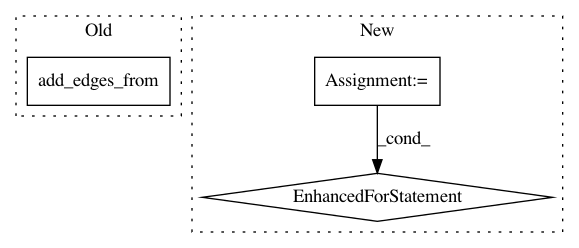

2d33217ca2c689ff8e577956325291dbe221da70,tests/data/test_stellargraph.py,,test_digraph_schema,#,46
Before Change
sg = StellarDiGraph()
sg.add_nodes_from([0, 1, 2, 3], label="movie")
sg.add_nodes_from([4, 5], label="user")
sg.add_edges_from([(0, 4), (1, 4), (1, 5), (2, 4), (3, 5)], label="rating")
schema = sg.create_graph_schema()
assert "movie" in schema.schema
After Change
assert len(schema.schema["user"]) == 0
// Test node type lookup
for n, ndata in sg.nodes(data=True):
assert ndata["label"] == schema.get_node_type(n)
// Test edge type lookup
node_labels = nx.get_node_attributes(sg, "label")
for n1, n2, k, edata in sg.edges(keys=True, data=True):
assert (node_labels[n1], edata["label"], node_labels[n2]) == tuple(
schema.get_edge_type((n1, n2, k))
In pattern: SUPERPATTERN
Frequency: 3
Non-data size: 3
Instances
Project Name: stellargraph/stellargraph
Commit Name: 2d33217ca2c689ff8e577956325291dbe221da70
Time: 2018-07-11
Author: docherty@gmail.com
File Name: tests/data/test_stellargraph.py
Class Name:
Method Name: test_digraph_schema
Project Name: stellargraph/stellargraph
Commit Name: 2d33217ca2c689ff8e577956325291dbe221da70
Time: 2018-07-11
Author: docherty@gmail.com
File Name: tests/data/test_stellargraph.py
Class Name:
Method Name: test_graph_schema
Project Name: pgmpy/pgmpy
Commit Name: eea41a4578b5021bbc16eb171bceb453cbde2419
Time: 2014-11-30
Author: abinash.panda.ece10@itbhu.ac.in
File Name: pgmpy/models/BayesianModel.py
Class Name: BayesianModel
Method Name: add_edges_from